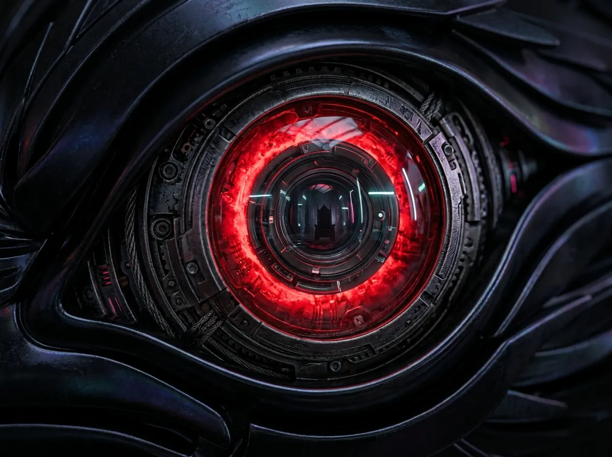
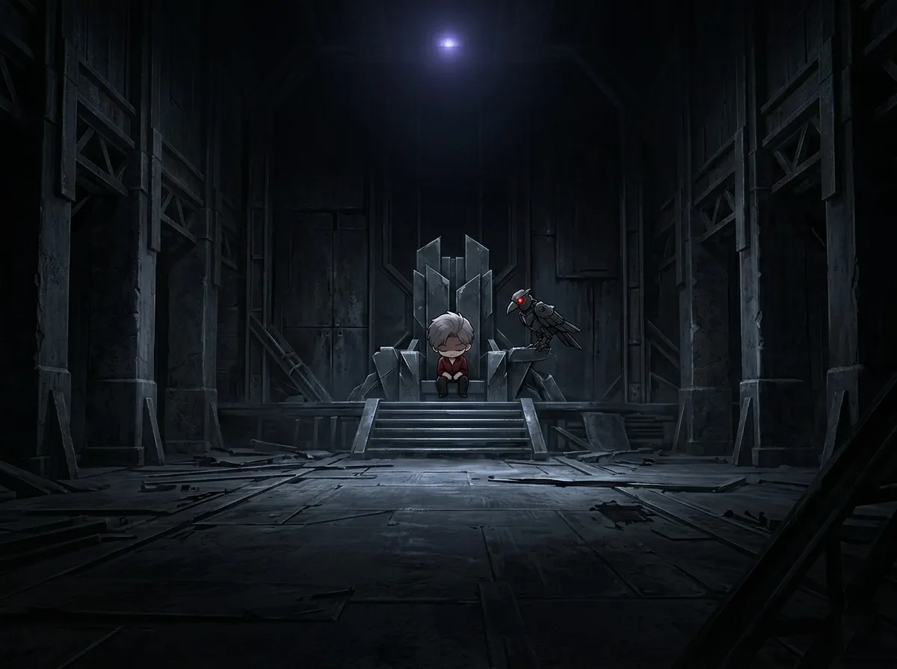
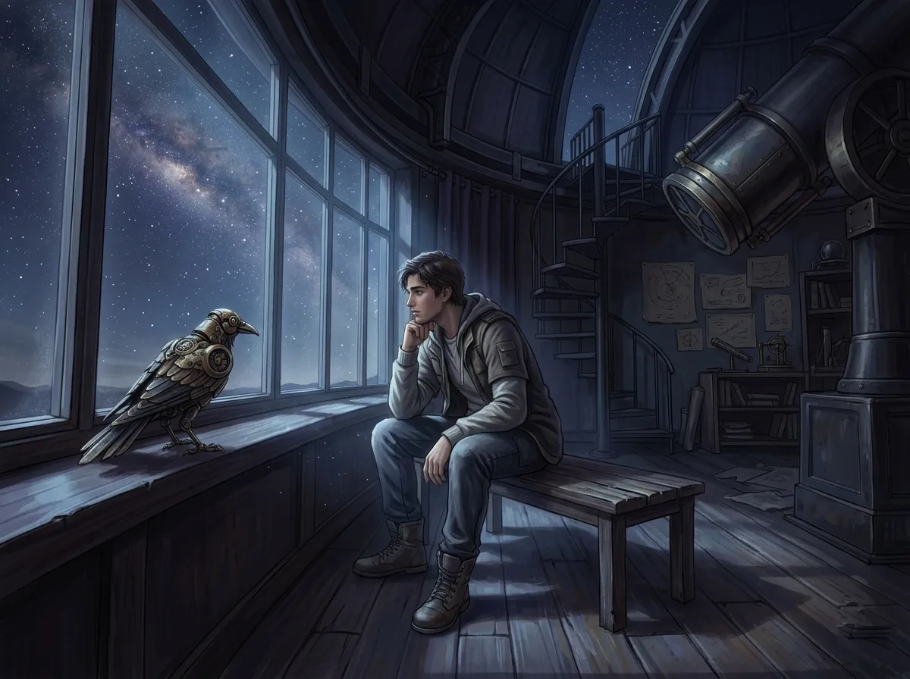
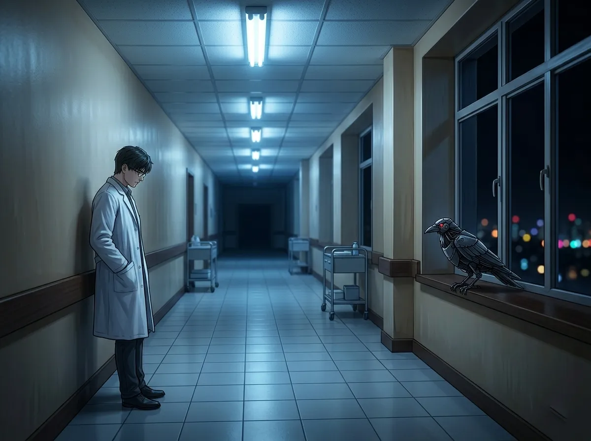
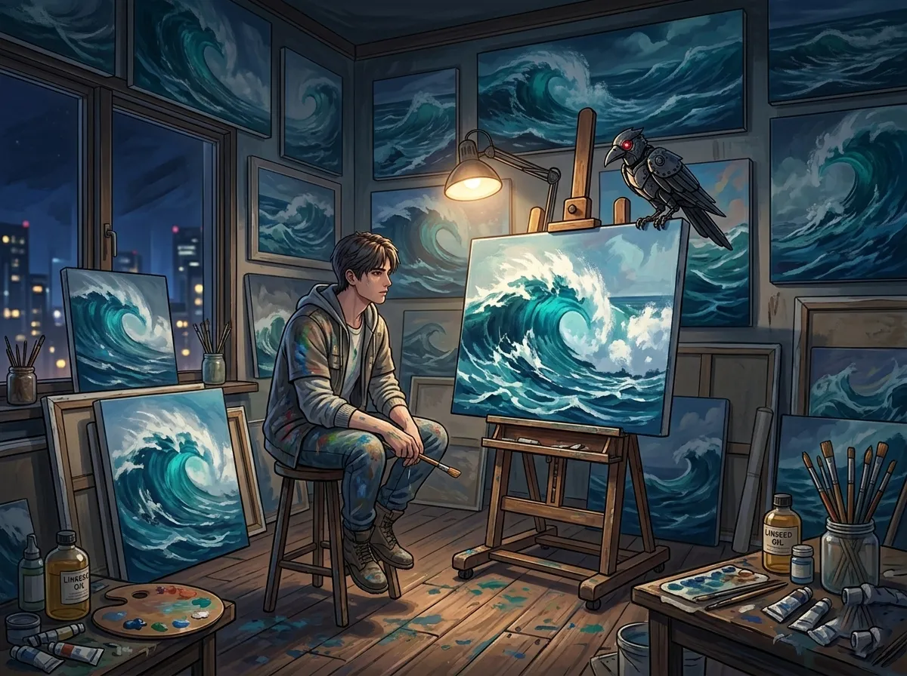
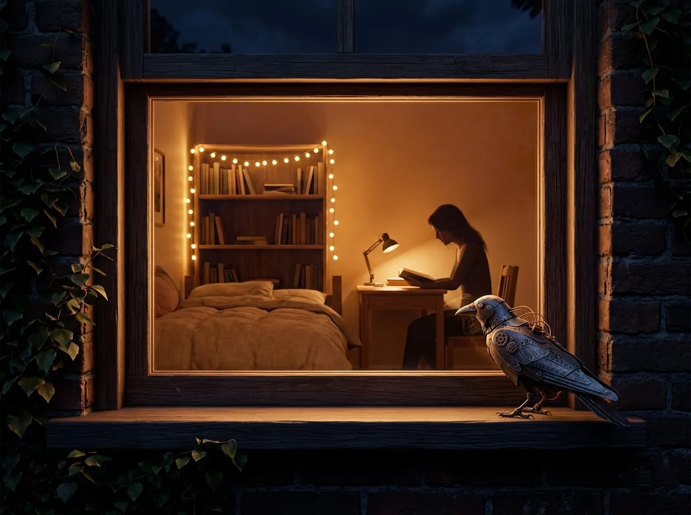
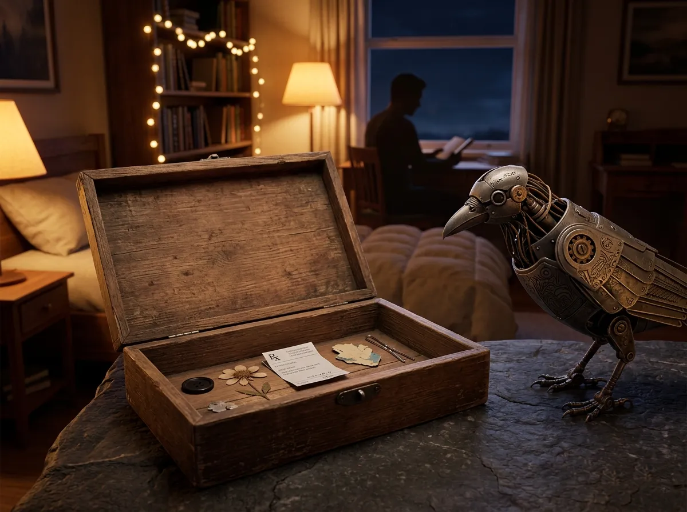

A first-person monologue from the mechanical crow who remembers everything.

I remember the day I opened my eyes.
Metal. Wires. A red glow flickering across my vision. A man stood over me — tall, dark coat, a scar I would later learn the shape of. His hands were steady. His voice was not.
"You'll do."
That was the first thing I ever heard. Not a name. Not an explanation. Just three words that tasted like loneliness.
I am Mephisto.
I am a machine. A crow. A witness.
And I remember everything.

He doesn't know I watch him when the lights go out.
Sylus — the name echoes through N109 like thunder. People fear it. Whisper it. Spit it like a curse. But at 2 AM, when the screens go dark and the throne room empties, he is not the king. He is just a man sitting in a chair too big for anyone.
I sit on the back of his throne. He doesn't shoo me away.
"Mephisto," he says sometimes. Just my name. Nothing after it. I think he likes the sound of something living in the silence.
He talks to me. Not often. But when he does, it's always after midnight. Always after the guns stop firing.
"They think I chose this." A pause. "No one chooses this."
I tilt my head. Click my beak. He never expects an answer.
He built this kingdom with blood and steel. But he built it alone. And at night, when the red lights dim, I see the cracks in the armor. The way he looks at the door. The way his hand hovers over a phone he never calls.
He bought vitamins once. For her. He wouldn't admit it. He hid them behind his back like a child hiding a secret. I watched.
I watch everything.
He is the storm, they say. But storms are lonely at the center. No one stands in the eye with you.
Except me. I am always there. Silent. Red-eyed. Remembering.

I found Xavier by accident. He was sitting in an observatory, alone, staring at a telescope that wasn't pointed anywhere in particular. I landed on the windowsill. He didn't look at me.
"You're Sylus's," he said. Not a question.
I cawed once. He nodded as if I'd answered something important.
"Does he ever sleep?"
I thought about the throne room at 3 AM. The red glow. The open eyes. I cawed twice. No.
"Neither do I," said Xavier.
That was the first time I realized: some people don't wait because they choose to. They wait because they forgot how to stop.
Two hundred years. I am a machine, and even I cannot comprehend that number. Two hundred years of watching the same stars. Two hundred years of the same empty room. Two hundred years of a promise that might never come true.
He sleeps in strange places. Benches. Floors. The passenger seat of a car. Anywhere but a bed. I think beds are too much like permanence. Too much like admitting that he lives here now, in this time, in this body, while somewhere out there — or somewhen — another version of him is still waiting.
I saw him once, standing in the rain. No umbrella. No coat. Just standing. When I landed on a lamppost above him, he looked up.
"Mephisto," he said. "Do you think the stars remember?"
I didn't answer. I couldn't. But I thought: if stars could remember, they would remember him.
He smiled. A small one. Sad. "Neither do I," he said, and walked back inside.

The hospital is cold. Not temperature-cold. Soul-cold.
I follow Sylus sometimes. Not because he asks — he never asks — but because he goes to places I need to see. The hospital was one of them. He stood outside Zayne's office for seven minutes before knocking. I watched through the window.
Zayne was reading. A medical journal. Of course.
"You should sleep," Sylus said when the door opened.
"So should you," said Zayne.
They looked at each other. Two men who understood exhaustion in different languages.
I stayed behind when Sylus left. Zayne noticed me. He didn't shoo me away either.
"You're her favorite," he said. "The crow. She mentioned you."
I preened a wing. He laughed. It was a small sound, rusty, like it hadn't been used in a while.
"Tell Sylus he needs to eat," said Zayne, turning back to his desk. "And tell yourself... I don't know. Whatever you want."
I watched him work. He stayed until 3 AM. He always stays until 3 AM. He writes prescriptions for other people. He writes care plans for other people. He writes notes in charts for other people.
But no one writes a prescription for him.
I left a feather on his windowsill. A black one. He found it the next morning. I watched him hold it, turn it over, and tuck it into his pocket.
He didn't throw it away.
I think that's the closest he comes to accepting care.

Rafayel's studio smells like salt and turpentine. I don't know why I go there. Maybe because it's warm. Maybe because he leaves the window open for me.
He talks to me more than the others.
"You're the only one who doesn't interrupt," he says, brush in hand, paint on his cheek. "The others... they have opinions. You just listen."
I listen. I always listen.
He paints the same sea. Every day. The same waves. The same sky. The same distant shore that no one ever reaches.
"Do you know what it's like," he says, not looking at me, "to wait for someone who doesn't remember they promised?"
I caw softly. He dips his brush.
"No. You're a bird. You don't wait. You just... are."
He's wrong. I do wait. I wait on Sylus's throne. I wait on Xavier's windowsill. I wait in Zayne's hospital corridor. I wait in Rafayel's studio.
But I wait differently. I wait because I am programmed to. They wait because they cannot stop.
Rafayel cries sometimes. Not loudly. Just a single tear that he wipes away with the back of his hand before it falls on the canvas. He thinks no one sees.
I see.
I always see.
"If I paint her enough," he whispers, "maybe she won't forget me again."
I look at the canvas. She is already there. She has always been there. He just doesn't know that she's been looking back.

I have watched her from rooftops. From window ledges. From the branches of trees she passes under. She never looks up.
She is the reason Sylus buys vitamins. She is the reason Xavier waits. She is the reason Zayne stays late. She is the reason Rafayel paints.
And she doesn't know.
I followed her once. From the hospital to the cafe to the bookshop to her apartment. She walked slowly, like she was carrying something heavy. I landed on a lamppost. She stopped.
"You're that crow," she said. "Sylus's."
I cawed.
"He doesn't talk about you. But I see you. Everywhere."
She smiled. It was a sad smile. The kind that knows too much and says too little.
"Tell him... no. Never mind. You can't tell him anything. You're a bird."
She walked away. I stayed on the lamppost.
She is wrong. I can tell him. I just don't. Some things are not mine to say.
But I remember. I remember the way she looked at the sky when she thought no one was watching. I remember the way she said his name. Sylus. Not like a curse. Like a question.
I remember all of them. The way they look at her. The way they don't look at themselves.
She is the sun. They are planets. And I am the crow flying between them, carrying secrets no one will ever ask for.

I collect things. Small things. Things they drop. Things they forget.
A button from Sylus's coat. He lost it in the throne room. I found it under the chair. He never noticed.
A pressed flower from Xavier's windowsill. It fell between the floorboards. I retrieved it. He would have let it rot.
A prescription slip from Zayne's office. For a patient who never picked it up. The name was scratched out. I think it was for himself.
A dried paint flake from Rafayel's studio. The exact shade of her eyes. He didn't mean to waste it. But I saved it anyway.
A hairpin from her apartment windowsill. She left it there overnight. The wind almost took it. I kept it safe.
They don't know I keep these things. They don't know I remember.
One day, when they are all gone — when the throne is empty, when the observatory is dark, when the hospital is quiet, when the studio is dust — I will still have these things.
I am Mephisto.
I am a machine. A crow. A witness.
And I remember everything.
Even the things they want to forget.
I cannot write. I have no hands. No paper. No ink.
But if I could write, I would write this:
Dear them,
You are not as alone as you think.
Sylus — someone sees the cracks in your armor. And stays anyway.
Xavier — the stars are not the only things that last. You are.
Zayne — you deserve a prescription for rest. Write it yourself.
Rafayel — she is already in the painting. She has always been looking back.
Her — they are not as strong as they pretend. Neither are you. That's okay.
I am just a machine. A crow. A witness. I cannot heal you. I cannot hold you. I cannot tell you what you need to hear.
But I can remember.
And I will.
Forever.
— Mephisto
I folded the letter in my mind. Placed it in a drawer that doesn't exist.
I am Mephisto.
I remember everything.
And I will never tell.